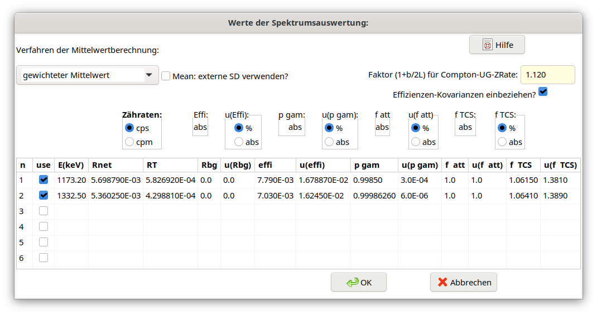

5.16. Dialog Werte der Spektrums-Auswertung¶
In einer Tabelle eines Windows-Dialogs können zeilenweise für jede der Gammalinien die Messwerte und Unsicherheiten der in der obigen Gleichung verwendeten Messgrößen (Symbole) eingegeben werden.
Es sei noch auf die Besonderheit hingewiesen, dass z.B. im Falle eines natürlich vorkommenden Radionuklids von den zunächst bestimmten Nettozählraten auch die entsprechenden Nulleffektzählraten („Peak im Peak”) abgezogen worden sein müssen. Dementsprechend muss die Unsicherheit einer Nettozählrate auch den Unsicherheitsbeitrag der Nulleffektzählrate beinhalten. Unter dieser Voraussetzung ist die zusätzliche Eingabe der einzelnen Nulleffektzählraten nicht erforderlich.
Es wird angenommen, dass alle erforderliche Werte und Unsicherheiten aus dem mit einem Gammaspektrometrie-Programm erhaltenen Auswerteprotokoll eines Gammaspektrums entnommen werden.
Der Aufbau des Dialogs ist im folgenden Bild gezeigt.

Die einzugebenden Messwerte sind:
Symbolnamen im Dialog |
Bedeutung |
Symbole |
|---|---|---|
Rnet |
net counting rate of the gamma line at energy \(E_{i}\), in \(s^{-1}\) |
\(R_{ni}\) |
RT |
Zählrate des integrierten Compton-Untergrunds im Bereich 1,7×Fwhm des Peaks i bei der Energie \(E_{i}\), in \(s^{-1}\) |
\(R_{T}\) |
Rbg |
Nettozählrate einer Gammaline bei \(E_{i}\) im separat gemessenen Nulleffektspektrum, in \(s^{- 1}\) |
\(R_{bg}\) |
effi |
full energy peak efficiency at energy \(E_{i}\) |
\(\epsilon_{i}\) |
pgamm |
Emissionswahrscheinlichkeit der Linie i |
\({p}_{\gamma i}\) |
f_att |
self-attenuation correction for energy \(E_{i}\); it is used in its multiplicative form |
\(f_{att,i}\) |
f_coin |
Koinzidenz-Summationskorrektur der Linie bei der Energie \(E_{i}\); sie wird in ihrer multiplikativen Form verwendet; |
\(f_{coinsu,i}\) |
Die Einheiten der Nettozählraten können in cps (\(s^{- 1}\)) oder in cpm (\(\min^{- 1}\)) angegeben werden.
Die gemessenen Werte müssen als absolute Werte, nicht als relative Werte eingegeben werden. Für deren Unsicherheiten kann die Eingabe mit Hilfe der Radiobuttons wahlweise in % oder als absolute Unsicherheitswerte erfolgen.
Hinweis: Bis zur Version 2.4.18 standen sieben Radiobuttons zur Verfügung; seit Version 2.4.19 können nur noch 5 verwendet werden. Die Radiobuttons für effi und pgamm wurden entfernt, weil ihre Werte nur als absolute Werte geliefert werden können. Werden ältere Projekte geladen, die noch für 7 Radiobuttons definiert wurden, werden die Daten intern auf 5 Buttons angepasst, indem die Werte von effi und pgamm durch 100 geteilt werden, falls ihre Buttons nicht als „abs” angegeben waren.
Die Aktivitäten Ai der einzelnen Linien werden nach der folgenden Gleichung berechnet:
\(A_{i} = R_{ni}\frac{f_{att,i\ } \cdot \ f_{coinsu,i}}{\epsilon_{i}{\ \cdot \ p}_{\gamma i}\ }\)
Außerdem werden die Unsicherheiten der Nettozählraten vom Programm nach folgender Gleichung berechnet:
\(u^{2}\left( R_{ni} \right) = \frac{R_{ni}}{tlive} + \frac{R_{T}}{tlive}f_{B} + \frac{R_{bg}}{tlive} + u^{2}\left( R_{bg} \right)\)
Hierin ist \(f_{B}\) ein Faktor, der davon abhängt, wie die Nettozählrate Rni des Peaks ausgewertet wurde. Im Falle der „klassischen” Methode der gesamten Peakfläche (TPA) ist er gegeben durch:
\(f_{B} = \left( 1 + \frac{b}{2L} \right)\)
Hierin ist b die Breite des Peaks, z.B. b*=1,7xFwhm, und *L die Anzahl der Kanäle, über die jeweils links und rechts vom Peak der mittlere Peakuntergrund ermittelt wird.
Wird jedoch Rni durch die Methode der Peak-Anpassung bestimmt, so kann \(f_{B}\) durch einen festen Wert approximiert werden, der „etwas größer als 1” ist. Dieser Faktor hängt dann von der verwendeten Methode der Peak-Anpassung ab; er kann durch eine Art „Kalibrier”-Rechnungen abgeschätzt werden.
Im oberen Teil des Dialogs erlaubt ein Radiolisten-Feld die Wahl der Art des Mittelwerts zwischen:
Berechnung des gewichteten Mittelwerts und seiner Standardunsicherheit,
Least-squares-Berechnung des gewichteten Mittelwerts und seiner Standardunsicherheit
Außerdem erlaubt ein Zahlenfeld in diesem Dialog die Eingabe des Werts des Faktors \(f_{B}\); die Verwendung von Effizienz-Kovarianzen kann ausgewählt oder abgewählt werden.
Die Gamma-Energien sowie die Nettozählraten und deren Standardunsicherheiten müssen direkt in die Tabelle eingegeben werden.
In der ersten Spalte der Tabelle können einzelne Gammalinien ausgewählt oder abgewählt werden.